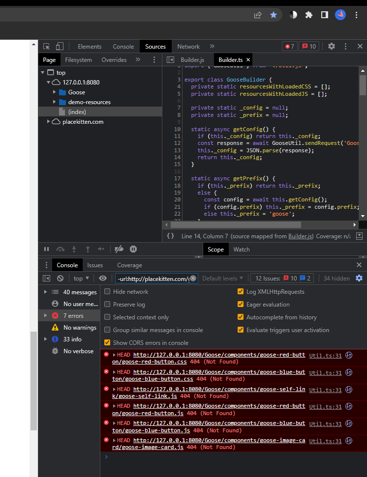

Welcome to Goose
Goose is a super basic tool for creating web components on a website.
By allowing the developer to define their own HTML/CSS/JS components in a single place, Goose encourages adherence to the Don't Repeat Yourself (DRY) principle without any JavaScript knowledge required.
Setup
The process of using Goose is simple:
- Add the Goose folder in the root of your website folder
- Add the below code to your <head> element.
<script src="Goose/_private/load.js" type="module"></script>
- That's it!
Using Goose Components
To use a Goose component, all you have to do is write it into your HTML like any other element. When the page loads, Goose will insert your component into that container, and voila, you have a component!
For example, the code used to generate one of the <goose-red-button> elements seen as seen below, is as simple as
<goose-red-button>I'm a button!</goose-red-button>
Components can be defined to replace any HTML. Some examples are below:
Buttons:
Cat images:
Here's some kittens, provided by
How Components Work
The <goose-button> is defined in the Goose/components/goose-button folder, which contains files for its HTML, CSS, and JavaScript.
Upon encountering a <goose-TAG-NAME-HERE> tag in the HTML, Goose automatically searches the Goose/components folder for a folder of files related to the component.
In the case of goose-button>, Goose finds the a Goose/components/goose-button folder, then fills the goose-button> with the contents of Goose/components/goose-button.html.
If any goose-button.css or goose-button.js files are found in that folder, Goose will also load them to the page.
<goose-body>
Sometimes you want your component to have content inside of it. We saw this earlier with the example of
This is accomplished by the <goose-body/> tag within the Goose component's HTML.
Here is the goose-red-button.html. You can see where the <goose-body/> gets replaced with I'm a button!
<goose-body></goose-body>
</goose-button>
<goose-slot> and <goose-insert>
Sometimes you need to be able to insert HTML into multiple places in a component. <goose-slot>
provides an easy way to accomplish this. Consider the template goose-slot-machine.html:
<div>
<goose-slot data-slot-id="left"></goose-slot>
</div>
<goose-slot data-slot-id="mid"></goose-slot>
<div>
<goose-slot data-slot-id="right"></goose-slot>
</div>
</div>
We can then replace each of these <goose-slot>s with our own code, by calling
<goose-slot-machine> as
<goose-insert data-slot-id="left">Left text</goose-slot>
<goose-insert data-slot-id="mid"><b> MIDDLE TEXT </b></goose-slot>
<goose-insert data-slot-id="right">right text</goose-slot>
</goose-slot-machine>
Then, the <goose-slot>s will be overwritten with their corresponding
<goose-insert>s at runtime, resulting in the final HTML output:
<div>
Left text
</div>
<b> MIDDLE TEXT </b>
<div>
right text
</div>
</div>
data-goose- and goose-insert-
Sometimes we need to pass in information to a component; specifically, information that isn't an HTML element. For example, the goose-button would benefit from having background colour and text colour parameters to allow customization.
Goose allows for this by having the parameters defined in the Goose element as data-goose- attributes, and in the component's HTML file as goose-insert- attributes.
This is best demonstrated by example. Here is some code for a goose-button:
I love buttons!
</goose-button>
Note the data-goose- attributes, in particular, data-goose-bg-colour and data-goose-text-colour.
Then, in the HTML file for goose-button, we use these values.
<goose-body />
</button>
When creating a component of your own, you do not need to pre-define these values in any way. Goose automatically fills in any goose-insert-s with data-goose- values, no setup required.
Nested components
Goose allows you to nest your Goose components inside of other Goose components. For example, here is goose-red-button.html:
<goose-body></goose-body>
</goose-button>
Defining your own components
Defining a new component is simple. Imagine that we want to create a new icon component for a website. The steps would be
-
Come up with a name for your component. All components must follow the pattern goose-COMPONENT-NAME-HERE. This allows Goose to differentiate between normal elements and Goose elements.
For example, we name this new component goose-icon
-
Create a new folder in the Goose/components folder, and name it your tag name.
For example, we create a Goose/components/goose-icon folder.
-
Create an HTML file in the new component's folder, and name it your tag name. Then, write the HTML for your component in this file.
For example, we create a Goose/components/goose-icon/goose-icon.html file, and fill it accordingly.
-
Create any CSS or JS files needed for this component; name them in the same pattern
For example, we create a Goose/components/goose-icon/goose-icon.css file, and fill with CSS code for the goose-icon component.
-
Use the component! It can now be called any HTML file that has the necessary script imported in the <head> (see Setup at the top of this page if you forget what this means).
goose-config.json
Within the Goose folder is goose-config.json, a file that allows the developer to configure how Goose
operates.
Here is a full wiki of its attributes:
prefix
Default: "goose"
Change this to change the prefix Goose uses to find attributes, elements, and components. Note that you will have to rename any existing web components to your new prefix.
Items that must remain named Goose:
goose-config.json- The Goose folder
resources
Use this to tell Goose what resources it should try to load for each component. Neglecting this may cause your developer console to have a lot of network errors.
Please follow the pattern pre-established in the base goose-config.json.
show_structure
Default: false
Set this to true to tell Goose to generate HTML output with the web component tags kept in the final
output. This can clutter the output HTML, but also provide more context on how that HTML is generated.
Note that changing this setting can lead to slight layout changes, although it will not cause any major shifts.
Troubleshooting
I don't want my components to be called goose-
This is understandable. To change the prefix used by Goose, you can change the prefix set in Goose/goose-config.json.
Note that this will also require any data-goose- and goose-insert- to instead use your new prefix instead of goose-.
File not found errors
Are you getting errors similar to these?
These errors occur when Goose looks for a component file but finds it missing. They can be silenced by adding an entry to the resources object in the Goose/goose-config.json file for your component.
Following the pattern there, you can set a component's "css": false to tell Goose not to check for that component's CSS file.
Similarly, you can set "js": false to tell Goose not to check for that component's JS file.